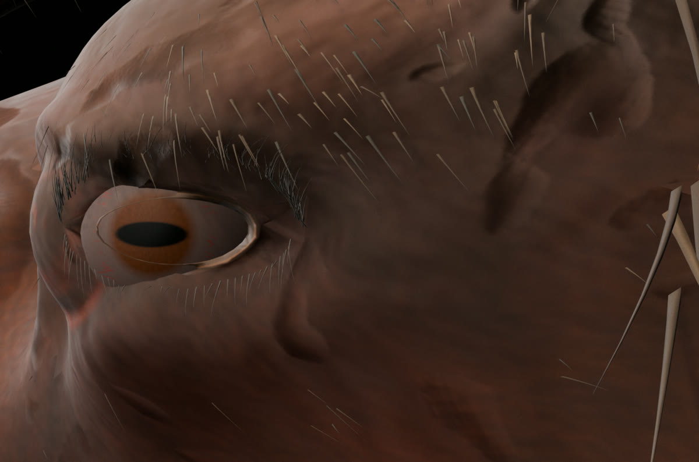
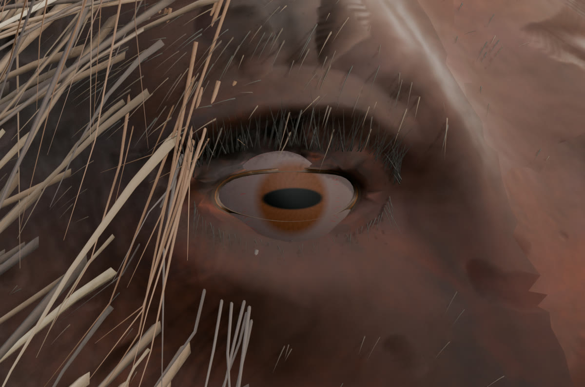
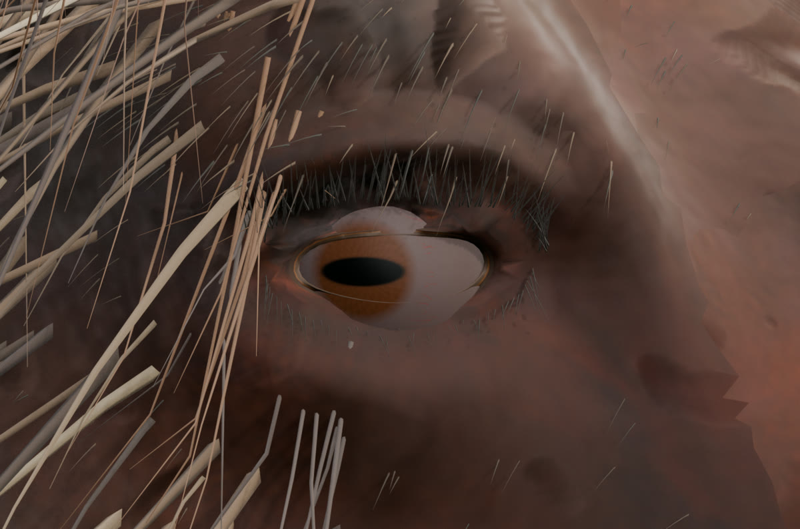
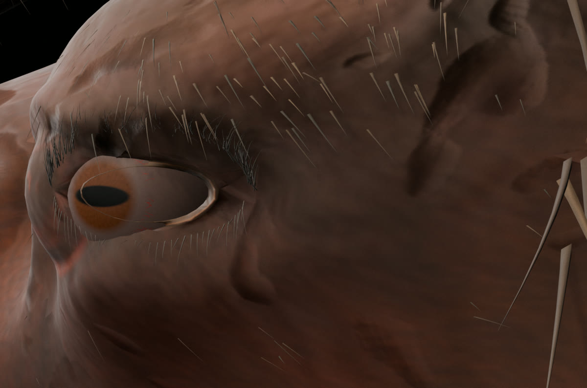
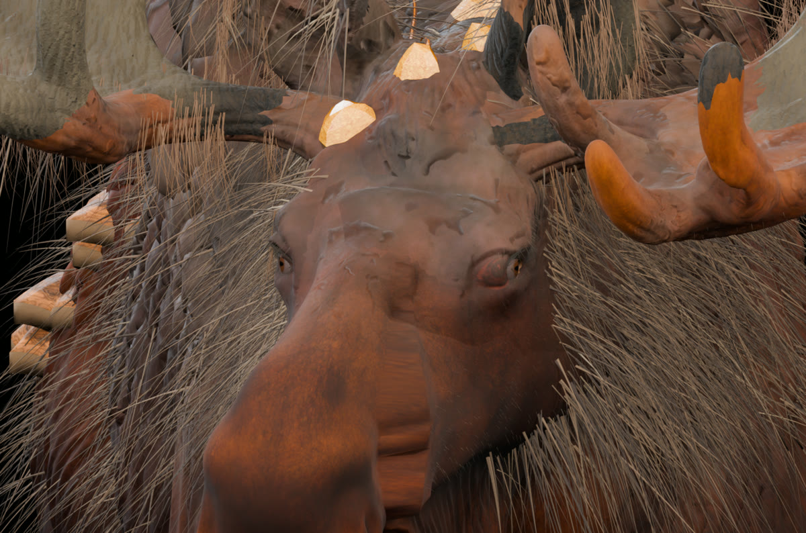
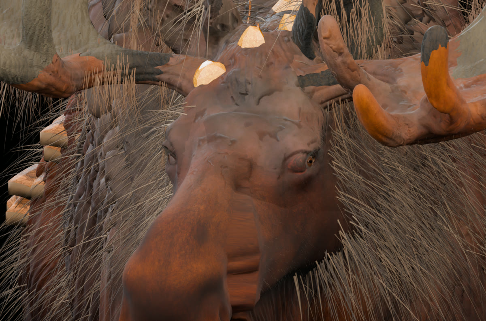

Лось V32X-B — переработка формы глазниц, не только ободков
По скриншоту V32W стало понятно, что старые правки практически не изменяли контур проёма в коже. В V32X-B изменена сама геометрия прилегающей морды: веки сужены по вертикали, переходы смешаны с исходным PBR-материалом кожи, а сохранённые сферические глаза по-прежнему вращаются синхронно.
ЛЕВЫЙ ГЛАЗПРАВЫЙ ГЛАЗ
Перескульпт кожи1 828 изменённых вершин непосредственно возле глазниц
PBR-мост816 граней внутренней поверхности век получили исходный материал кожи
Техническая проверкаGLB 2.0, 3 клипа, синхронность 60 кадров, оба 4K-материала глаз на месте
Настоящее сравнение V32W → V32X-B
Одинаковые углы камеры и освещение в Blender — изменения можно оценить непосредственно, без сгенерированных картинок.




Сдвинь ползунок, чтобы сравнить геометрию
V32W · доV32X-B · после
Взгляд прямо / влево




Статус: улучшенная рабочая версия, НЕ окончательный AAAA-финал.
Остались светлый участок левого верхнего века, яркая кайма у внутреннего уголка правого глаза и некоторые посторонние пряди шерсти. Эти дефекты видны в крупных планах, поэтому художественная приёмка пока не пройдена.